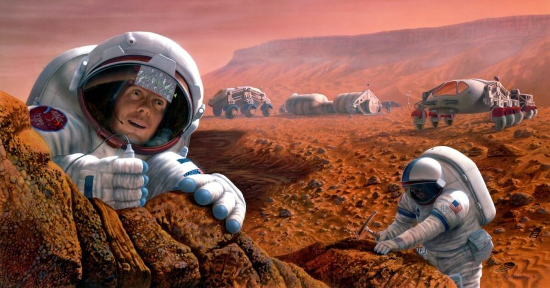

နိုင်ငံတကာက သိပ္ပံပညာရှင်တွေ ပါဝင်တဲ့ သုတေသန အဖွဲ့တစ်ခုဟာ အင်္ဂါဂြိုဟ် ပေါ်မှာ လူသားတွေ ဘယ်လောက် ကြာကြာ နေထိုင် နိုင်မလဲ ဆိုတာနဲ့ ပတ်သက်ပြီး သုတေသန ပြုလျက် ရှိကြပါတယ်။ ဒီ သုတေသီ အဖွဲ့ဟာ သူတို့ရဲ့ သုတေသန တွေ့ရှိချက်ကို စာတမ်းတစ်စောင် ပြုစုပြီး တင်ပြလာ ပါတယ်။
အင်္ဂါဂြိုဟ်မှာ ကမ္ဘာပေါ်မှာလို သံလိုက်စက်ကွင်း မရှိပါဘူး။ ဒီတော့ အင်္ဂါဂြိုဟ်ပေါ် ကျရောက်လာတဲ့ အာကာသ ရောင်ခြည် (Cosmic rays) တွေနဲ့ အခြား ရေဒီယို သတ္တိကြွ လှိုင်းတွေ၊အမှုန်တွေရဲ့ အန္တရာယ် ကနေ အကာအကွယ် ပေးနိုင်စွမ်း မရှိပါဘူး။ အ
ခု သုတေသီ တွေဟာ အင်္ဂါဂြိုဟ်ပေါ်ကို ဒီလို ကျရောက်တဲ့ ရေဒီယို ဓါတ်ရောင်ခြည်တွေကြောင့် ဂြိုဟ်ပေါ်ကို လာအခြေချကြမယ့် လူသားတွေ အပေါ် ဘယ်လို အကျိုးသက်ရောက်မှုတွေ ရှိမလဲ ဆိုတာနဲ့ ပတ်သက်ပြီး သုတေသန ပြုနေကြတာ ဖြစ်ပါတယ်။
အခု သုတေသနရဲ့ ရလဒ်တွေဟာ အင်္ဂါဂြိုဟ်ပေါ် လူသားတွေ အခြေချမယ့် စီမံကိန်း မစ်ရှင် တွေအတွက် လမ်းညွှန်ချက် တစ်ခုအနေနဲ့လဲ အသုံးပြု သွားနိုင်ဖို့ ရည်ရွယ် ထားကြပါတယ်။
ဒီ သုတေသနရဲ့ တွေ့ရှိချက် တွေအရ အင်္ဂါဂြိုဟ် ပေါ်မှာ သွားရောက် အခြေချကြမယ့် လူသားတွေ အနေနဲ့ ဂြိုဟ်ပေါ်မှာ အချိန်ကာလ ၄ နှစ်ထက် ပိုပြီး ကြာရှည်အောင် နေခဲ့မယ် ဆိုရင် ဓါတ်ရောင်ခြည် သက်ရောက်မှုဟာ လူသားတွေ အတွက် အန္တရာယ် ဖြစ်စေနိုင်တဲ့ အတိုင်းအတာကို ရောက်ရှိ သွားမယ်လို့ ဆိုပါတယ်။
ဆက်စပ်ဆောင်းပါး – အင်္ဂါဂြိုဟ် ဥက္ကာတွင်းကြီးတွေ အတွင်းက ထူးဆန်းသော ပုံသဏ္ဍာန်များ
အခု သုတေသနကို အမေရိကန် ပြည်ထောင်စု ကာလီဖိုးနီးယား ပြည်နယ်၊ လော့စ်အိန်းဂျယ်လီးစ် မြို့က University of California, Los Angeles (UCLA) က သုတေသီ တွေက ဦးဆောင်ခဲ့တာ ဖြစ်ပါတယ်။
မားစ် ပေါ်ကို အခြေချမယ့် ဘယ် သက်ရှိတွေ အတွက်မဆို အကြီးမားဆုံး အန္တရာယ် တစ်ခုကတော့ နေနဲ့ အခြားသော ကြယ်တွေက ရောက်ရှိလာတဲ့ စွမ်းအားမြင့် အမှုန်တွေကြောင့် ဓါတ်ရောင်ခြည် သင့်မယ့် အန္တရာယ် ပဲ ဖြစ်ပါတယ်။ ဒီ စွမ်းအားမြင့် အမှုန် (high energy particles) တွေဟာ ကမ္ဘာပေါ်မှာ ဆိုရင်တော့ ကမ္ဘာ့ သံလိုက်စက်ကွင်းက အကာအကွယ် ပေးထားတာမို့ မြေမျက်နှာပြင် အထိ ရောက်မလာနိုင် ကြပါဘူး။
ဒါပေမယ့် အာကာသ ထဲမှာတော့ ဘာသံလိုက်စက်ကွင်းမှ မရှိတာမို့ ဒီ ရောင်ခြည်တွေရဲ့ အန္တရာယ် ကနေ အကာအကွယ် ရနိုင်မှာ မဟုတ်ပါဘူး။ အာကာသ ထဲမှာ ကြာရှည် နေထိုင်တဲ့ အာကာသ ယာဉ်မှူးတွေ အတွက် ဒီ ရောင်ခြည်တွေရဲ့ အန္တရာယ်နဲ့ ကြုံတွေ့ ရနိင်ပါတယ်။
ဆက်စပ်ဆောင်းပါး – အင်္ဂါဂြိုဟ်ပေါ်က ပင်လယ် ဘယ်လို ပျောက်ဆုံး သွားသလဲ
မားစ်ပေါ်မှာတော့ ဒီလို အကာအကွယ် ပေးထားတဲ့ သံလိုက်စက်ကွင်း မရှိပါဘူး။ ဒီတော့ ဒီ စွမ်းအားမြင့် အမှုန်တွေ (ဒီအမှုန် တွေကိုပဲ Cosmic rays တွေလို့ ခေါ်တာ ဖြစ်ပါတယ်) ရန်ကနေ မားစ်အခြေချ လူသားတွေကို ကာကွယ် ပေးနိုင်စွမ်း ရှိမှာ မဟုတ်ပါဘူး။ ဒီ အာကာသ ရောင်ခြည်တွေနဲ့ ခနတဖြုတ် ထိတွေ့မိတာက အန္တရာယ် သိပ်မှရှိလှ ပေမယ့် အချိန် ကြာလာရင်တော့ အန္တရာယ် ရှိတဲ့ အတိုင်းအတာ တခုကို ရောက်ရှိလာမှာ ဖြစ်ပါတယ်။
သုတေသီ တွေရဲ့ တွေ့ရှိချက် အရ မားစ်ပေါ်မှာ ၄ နှစ်ထက် ပိုကြာအောင် နေထိုင်ခဲ့မယ် ဆိုရင် ဒီ ရောင်ခြည်တွေနဲ့ ထိတွေ့မှုကြောင့် ရရှိလာမယ့် ရေဒီယေးရှင်း ဓါတ်ရောင်ခြည် သင့်မှု ပမာဏဟာ အလွန်အမင်း အန္တရာယ် ကြီးမားတဲ့ ပမာဏ တစ်ခုကို ရောက်ရှိသွားမယ်လို့ ဆိုပါတယ်။
ပညာရှင် တွေရဲ့ အဆိုအရ ဒီ သက်ရောက်တဲ့ ရေဒီယေးရှင်း ဓါတ်ရောင်ခြည် အများစုဟာ နေအဖွဲ့အစည်း ပြင်ပက ကြယ်တွေနဲ့ ဂလက်ဆီတွေ ဆီက ရောက်ရှိလာတဲ့ ဓါတ်ရောင်ခြည်တွေ ဖြစ်မယ်လို့ ဆိုပါတယ်။
အခုလို အဖြေကို ရရှိဖို့ နိုင်ငံတကာ တက္ကသိုလ် တွေက ပညာရှင်တွေဟာ ဆွဲငင်အား အခြေအနေ အမျိုးမျိုးမှာ စွမ်းအားမြင့် အမှုန်တွေကြောင့် ဖြစ်ပေါ်လာမယ့် ဓါတ်ရောင်ခြည့် သင့်မှု အသွင် အမျိုးမျိုးနဲ့ အာကာသ ယာဉ်တွေပေါ်က ယာဉ်မှူးတွေ ခံစားရတဲ့ ဓါတ်ရောင်ခြည် သင့်မှု အခြေအနေ တွေကို နှိုင်းယှဉ် ကြည့်ခဲ့ကြတာ ဖြစ်ပါတယ်။
ဆက်စပ်ဆောင်းပါး – အင်္ဂါဂြိုဟ် ပေါ်မှာ ရေအမြောက်အများ ရှာတွေ့
အားကောင်းတဲ့ ဆူပါ ကွန်ပြူတာတွေကို အသုံးပြုပြီး မားစ် ဂြိုဟ် အခြေအနေမှာ ကျရောက်မယ့် ဓါတ်ရောင်ခြည် ပမာဏ ကို တွက်ချက် ခဲ့ကြပြီး ဒီ ပမာဏသာ လူသားတွေ အပေါ် ကျရောက်ရင် ဘယ်လို ဖြစ်လာမလဲဆိုတာကို ဆက်လက် တွက်ချက် ခဲ့ကြပါတယ်။
အခု တွေ့ရှိချက်တွေကို Journal of Space Weather သုတေသန ဂျာနယ်မှာ တင်ပြ ထားကြပါတယ်။ ဒီ သုတေသနမှာ တဆက်ထဲပဲ အနာဂါတ် မာစ် ခရီးစဉ် တွေ ရေးဆွဲတဲ့ အခါ ဒီ ဓါတ်ရောင်သင့်မှု လျှော့ချနိုင်ဖို့ ဘယ်လို အချိန်တွေမှာ အာကာသယာဉ်တွေ စေလွှတ်သင့်သလဲ ဆိုတာကိုပါ တခါတည်း အကြံပြု ထားကြပါတယ်။
ကမ္ဘာကနေ မားစ်ကို အသွားအပြန် ခရီးနဲ့ မာစ်ပေါ်မှာ ကြာချိန်တွေကို ကမ္ဘာနဲ့ အင်္ဂါဂြိုဟ်နဲ့ အကွာအဝေး အနီးဆုံး ဖြစ်မယ့် အချိန်နဲ့ ချိန်ရွယ် တွက်ချက်ပြီး လွှတ်တင် ခြင်းအားဖြင့် ခရီးစဉ် အစအဆုံး ကြာမြင့်ချိန်ကို ၄ နှစ်ထက် တိုတောင်းအောင် စီမံနိုင်မှာ ဖြစ်ပါတယ်။
ဆက်စပ်ဆောင်းပါး – အင်္ဂါဂြိုဟ် ပေါ်မှာ အော်ဂဲနစ် ဒြပ်ပေါင်း အထောက်အထားသစ် ရှာတွေ့
နောက်ပြီး ကမ္ဘာက လွှတ်တင်တဲ့ အချိန်ကာလ ကိုလဲ နေရဲ့ ပြင်အား အကောင်းဆုံး (Solar Maximum) ကာလနဲ့ အချိန်ကိုက်ပြီး လွှတ်တင်ဖို့လဲ အဆိုပြု ထားကြပါတယ်။ ဒီလို နေရဲ့ ပြင်းအား အကောင်းဆုံး အချိန်မှာ နေအဖွဲ့အစည်း ပြင်ပက ရောက်လာတဲ့ အာကာသ ရောင်ခြည် တွေဟာ နေအဖွဲ့အစည်းထဲ မဝင်နိုင်ပဲ ပြင်ပကို တွန်းကန်ထုတ်ခြင်း ခံကြရမှာ ဖြစ်ပါတယ်။ ဒါ့ကြောင့် ဒီအချိန်မှာ အာကာသ ယာဉ်မှူးတွေ Cosmic rays တွေရဲ့ ရန်က အတိုင်းအတာ တစ်ခုအထိ အကာအကွယ် ရရှိကြမှာ ဖြစ်ပါတယ်။
လက်ရှိ နည်းပညာ တွေနဲ့ဆို ကမ္ဘာက အင်္ဂါဂြိုဟ် အသွားခရီးဟာ အချိန် ၉ လခန့် ကြာမြင့်မှာ ဖြစ်ပါတယ်။ အခု လက်ရှိ နည်းပညာ နဲ့ကို ကမ္ဘာက နေ အင်္ဂါဂြိုဟ် အသွားအပြန် ခရီးစဉ်ကို နှစ်နှစ် အတွင်း အပြီးအစီး ဆောင်ရွက်နိုင်မှာ ဖြစ်ပါတယ်။
ဒီ သုတေသန က ဘာကို ပြလဲဆိုတော့ အာကာသ ယာဉ်မှူတွေ အတွက် ဓါတ်ရောင်ခြည် သင့်မှု အန္တရာယ် ရှိပေမယ့် မားစ်ကို လူလိုက်ပါ သွားရောက်မယ့် ခရီးစဉ်ဟာ မဖြစ်နိုင်စရာ မရှိဘူး ဆိုတာပဲ ဖြစ်ပါတယ်လို အခု သုတေသနမှာ ပါဝင်သူ တစ်ဦးဖြစ်သူ UCLA က သုတေသီ Yuri Shprits က နိဂုံးချုပ် အနေနဲ့ မှတ်ချက် ပေးပါတယ်။
Ref: Mars Is Safe for Humans, But Only for Four-Year Missions | Interesting Engineering
အင်္ဂါဂြိုဟ်ပေါ်မှာ လူသားတွေ ဘယ်လောက်ကြာကြာ နေထိုင်နိုင်မလဲ

February 21, 2023
Other Posts
- လကို လူလွှတ်မယ့် နာဆာရဲ့ ဒုံးပျံ
- Wormholes တွေကို ဖြတ်ပြီး ခရီးသွားဖို့ ဖြစ်နိုင်မလား
- နယူတန်ရဲ့ ဆွဲငင်အားနဲ့ အိုင်းစတိုင်းရဲ့ ဆွဲငင်အား ဘာကွာလဲ
- အိုင်းစတိုင်း လက်စွပ်
- ကမ္ဘာနဲ့ အရွယ်တူ ဂြိုဟ်တစ်စင်း ရှာတွေ့
- စကြာဝဠာရဲ့ ပထမဆုံး ဂလက်ဆီ ၇၁၇ ခု ဂျိမ်စ်ဝက်ဘ် ရှာတွေ့ထားပြီ
- အချိန်ပြောင်းပြန် သွားနေတဲ့ ဆန့်ကျင်ဖက် စကြာဝဠာ
- ရှေးဂရိမြို့ဟောင်းအား တူးဖေါ်စရာ မလိုပဲ အာကာသရောင်ခြည် နည်းပညာဖြင့်ရှာဖွေ
- ကားတာယာနဲ့ ပါတ်သက်ပြီး သိသင့်သမျှ
- အလင်းကို ဒြပ်အဖြစ် အောင်မြင်စွာ ပြောင်းနိုင်ပြီ